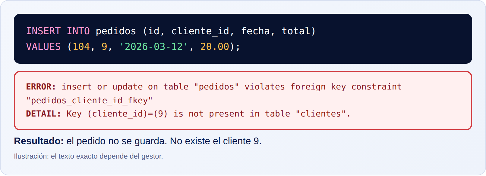

Esta parte no necesita ningún conocimiento previo. No hace falta saber programar, ni haber usado nunca una base de datos, ni conocer ninguna palabra técnica. Todo lo que aparezca se explica la primera vez que se usa.
Al terminarla serás capaz de:
Cada punto del manual sigue los mismos pasos, siempre en el mismo orden. Así sabrás dónde buscar lo que necesitas:
Para que todo encaje, usaremos siempre la misma pequeña tienda online. Tiene clientes y pedidos. Los clientes son Ana García, Luis Pérez y Marta Ruiz. Ana hizo dos pedidos, Marta uno y Luis ninguno. Volveremos a ellos en cada punto.
Un dato es un valor suelto, sin contexto. Por ejemplo: «Ana», «34», «Madrid», «45.90», «2026-03-02». Si ves uno de ellos escrito en un papel, no sabes qué significa.
La información es lo que obtienes cuando los datos se colocan en un contexto que les da sentido. «Ana tiene 34 años y vive en Madrid» es información: ya sabes de quién se habla, qué es el 34 y qué es Madrid.
La diferencia es la misma que entre ladrillos y una pared. Los ladrillos (datos) no sirven de nada amontonados; colocados con orden y con un plano (el contexto) forman una pared (información).
Sirve para decidir qué guardar y cómo guardarlo. Una base de datos no guarda «información» como tal: guarda datos con la estructura suficiente para que, al pedirlos, devuelvan información. Esa estructura es lo que veremos en todo el manual.
Imagina que alguien te da una lista con «38», «38», «37», «39». ¿Son edades? ¿Euros? ¿Grados de fiebre? ¿Tallas de zapato? Sin contexto, la lista no sirve. Si una aplicación guarda ese «38» sin decir qué significa, dentro de unos meses nadie sabrá interpretarlo, ni siquiera quien lo programó.
Cada vez que diseñes una base de datos te harás las mismas preguntas sobre cada dato: ¿de qué cosa es? ¿a quién pertenece? ¿en qué unidad está? ¿cuándo se midió?
El contexto de un dato se compone de varias pistas que se combinan:
precio_eur).Cuando las cuatro pistas están, el dato se convierte en información.
Tenemos tres datos sueltos: «Ana», «34» y «Madrid». Para convertirlos en información seguimos estos pasos:
nombre, edad y ciudad.Una tienda online guarda «101», «2026-03-02» y «45.90». Sin estructura son tres números sin sentido. Con las columnas id_pedido, fecha y total_eur, el sistema sabe que el pedido 101 se hizo el 2 de marzo de 2026 y costó 45,90 euros. Con eso puede mostrar el pedido al cliente, sumar las ventas del mes o enviar la factura.
Qué ves en la imagen. A la izquierda hay tres datos sueltos en cajas: no se sabe qué son. A la derecha, esos mismos datos están colocados bajo las columnas nombre, edad y ciudad, y ya se puede leer la frase «Ana tiene 34 años y vive en Madrid». No ha cambiado ningún dato: solo ha cambiado el contexto.
dato1. ¿Por qué es un mal nombre y cómo lo mejorarías si guarda el precio de un producto en euros?nombre, telefono y email. Cada dato responde a una pregunta distinta (quién, por dónde llamarle, por dónde escribirle).precio, altura, temperatura), la fila a la que pertenece y la unidad.dato1 no dice qué guarda; en seis meses nadie lo recordará. Un buen nombre es precio_eur, porque indica qué es y en qué unidad está.Guardar datos con nombres que no explican nada (dato1, campo_x, valor) o mezclar unidades en la misma columna (precios unos en euros y otros en dólares). Lo que hoy parece evidente mañana es un misterio.
Dale a cada columna un nombre que explique su significado y, si hace falta, su unidad: fecha_nacimiento, precio_total_eur, peso_kg. Escribe el nombre pensando en alguien que no conoce tu proyecto.
Elige cualquier dato de una aplicación que uses y responde: ¿de qué cosa es? ¿a quién pertenece? ¿en qué unidad está? Si no puedes responder a las tres preguntas, ese dato todavía no es información.
Una base de datos es la solución a un problema muy antiguo: guardar muchos datos sin que se desordenen, se repitan, se pierdan o se contradigan. Antes de que existieran, la gente usaba cuadernos, fichas de papel, archivos sueltos en el ordenador y, más tarde, hojas de cálculo.
Sirve para cuatro cosas principales:
Una hoja de cálculo funciona bien con pocos datos y una sola persona. Cuando el proyecto crece (miles de clientes, varios empleados, una web y una app que leen y escriben a la vez), la hoja de cálculo empieza a fallar:
Una base de datos está diseñada para resolver precisamente estos problemas.
Una base de datos impone reglas que la hoja de cálculo no impone:
En una hoja de cálculo de pedidos, el cliente «Ana García» aparece en tres filas, y en una de ellas el teléfono está mal escrito. ¿Cuál es el teléfono correcto de Ana? La hoja no puede decírtelo: tiene tres versiones y ninguna regla para elegir.
Una tienda tiene 20.000 pedidos de 3.000 clientes. En una base de datos, los datos de Ana se guardan una sola vez en la tabla de clientes, y sus pedidos apuntan a ella. Si cambia de teléfono, se corrige en un único sitio y todos sus pedidos quedan al día automáticamente.

Qué ves en la imagen. Es una hoja de cálculo de pedidos. «Ana García» aparece en tres filas. Dos filas dicen que su teléfono es 600111222, pero la tercera dice 600111223, resaltado en rojo. Además, en una fila el nombre está escrito «Ana Garcia» sin tilde. La hoja no avisa de nada: tú tienes que darte cuenta.
Pensar que una base de datos es «una hoja de cálculo más grande». Su valor no está en el tamaño, sino en las reglas (tipos, claves, permisos, transacciones) y en las relaciones entre tablas.
Guarda cada dato una sola vez y enlázalo desde donde se necesite. Cuando veas el mismo dato escrito en varias filas, pregúntate si debería vivir en una tabla propia.
Sin mirar el texto, nombra tres problemas de una hoja de cálculo que una base de datos resuelve. Si puedes nombrar tres y explicar cómo los resuelve, has entendido para qué existen.
Una base de datos es un conjunto organizado de datos relacionados entre sí, guardados de manera que se puedan consultar, modificar y proteger.
Un sistema gestor de bases de datos (abreviado SGBD) es el programa que se ocupa de crear, guardar, proteger y consultar esos datos. Ejemplos de gestores son PostgreSQL, MySQL, SQLite y SQL Server.
Son dos cosas distintas, y mucha gente las confunde:
| Concepto | Qué es | Ejemplo |
|---|---|---|
| Gestor (SGBD) | Un programa | PostgreSQL |
| Base de datos | Un conjunto de datos organizados | La base tienda con clientes y pedidos |
Es el intermediario entre las aplicaciones y los datos guardados en disco. Las aplicaciones no abren los archivos de datos directamente. Le piden las cosas al gestor y este las hace por ellas, aplicando las reglas y comprobando los permisos.
Te permite distinguir dos frases que parecen iguales: «he instalado PostgreSQL» (el gestor) y «he creado la base de datos tienda» (los datos). Un mismo gestor puede contener muchas bases de datos independientes. Si no distingues ambas cosas, te resultará confuso leer documentación, pedir ayuda o configurar una conexión.
Cuando una aplicación necesita un dato, ocurre este recorrido:
La aplicación nunca toca los archivos. Eso es lo que garantiza que las reglas se cumplan siempre, venga la petición de la web, de la app del móvil o de una automatización.
Piensa en una biblioteca. Los libros y las fichas son la base de datos. La bibliotecaria que busca los libros, los presta y los recoge es el gestor. Tú, que pides un libro, eres la aplicación. No entras al almacén a buscarlo tú: se lo pides a la bibliotecaria.
Un servidor tiene PostgreSQL instalado. Dentro de él hay tres bases de datos: tienda, crm y pruebas. El gestor es uno (PostgreSQL); las bases de datos son tres. Cada una tiene sus propias tablas, y una aplicación puede tener acceso a tienda y ninguno a crm.

Qué ves en la imagen. A la izquierda están las tres aplicaciones que piden datos: una web, una app móvil y una automatización. En el centro está el gestor (PostgreSQL), con un candado que representa los permisos. A la derecha están los archivos de datos en el disco. Las flechas van siempre a través del gestor: ninguna aplicación llega directamente a los archivos.

Qué ves en la imagen. Dentro del bloque «Gestor PostgreSQL» hay tres bases de datos: tienda, crm y pruebas, y cada una tiene sus propias tablas. El gestor es único; las bases de datos son tres.
crm, MySQL, la base tienda.crm y tienda.Decir «base de datos PostgreSQL» para todo. PostgreSQL es el gestor; tus datos viven en bases de datos dentro de él. La confusión crea malentendidos al pedir ayuda o configurar herramientas.
Usa cada palabra con su significado. Cuando hables o escribas, pregúntate: ¿me refiero al programa o a los datos?
Explica con tus palabras, sin usar ejemplos del texto, la diferencia entre gestor y base de datos. Después, di cuántas bases de datos puede tener un gestor.
Una tabla es la forma de organizar los datos de un mismo tipo de cosa: clientes, pedidos, productos. Se parece a una cuadrícula de filas y columnas, como una hoja de cálculo, pero con reglas más estrictas.
Estas son sus partes:
clientes.clientes son id, nombre, email y telefono. Una columna también se llama campo: «campo» y «columna» son dos nombres para lo mismo.luis@ejemplo.com.Da una estructura fija. Todos los clientes tienen los mismos campos, así que se pueden buscar, ordenar, contar y comparar sin esfuerzo. Si cada cliente se guardase con campos distintos, no podrías preguntar «dame todos los emails».
Todo lo que harás en este manual (diseñar, consultar, modificar, proteger) se apoya en tablas. Si no tienes claro qué es una fila y qué es una columna, el resto resultará confuso. Por eso conviene dedicar tiempo a este punto.
Una tabla se define una vez: se decide su nombre y sus columnas, y qué tipo de dato admite cada una. Después se van añadiendo filas. Cada vez que llega un cliente nuevo, se añade una fila; cuando un cliente se da de baja, se elimina su fila. Las columnas no cambian con cada cliente: son la plantilla.
Una regla básica: cada fila describe una sola cosa, y cada columna guarda una sola característica. En una fila de clientes va un cliente, no dos; y el campo email guarda un email, no un email y un teléfono mezclados.
La tabla CLIENTES con cuatro columnas y tres filas:
id, nombre, email y telefono.1, Ana García, ana@ejemplo.com y 600111222.Una tienda tiene la tabla clientes con 3.000 filas. Cuando abres tu cuenta en la web, la aplicación busca tu fila, lee tus valores (nombre, email, teléfono) y los muestra en pantalla. Cuando cambias tu teléfono, modifica un único valor en tu fila.

Qué ves en la imagen. La tabla tiene la cabecera con los nombres de las columnas y tres filas. La fila de Luis está en naranja: es un registro completo. La columna email está en azul: es un campo. La celda en la que se cruzan, luis@ejemplo.com, es un valor.
| Elemento | Qué representa en CLIENTES |
|---|---|
| Tabla | Todos los clientes del negocio |
| Columna (campo) | Una característica: id, nombre, email, telefono |
| Fila (registro) | Un cliente concreto, por ejemplo Luis |
| Valor | Un dato concreto, por ejemplo luis@ejemplo.com |
Así se crea esta tabla en SQL. Es solo una muestra para ver la forma: se explica en la Parte 5.
CREATE TABLE clientes ( id integer PRIMARY KEY, nombre text NOT NULL, email text, telefono text );
Lectura sencilla de este código: «crea una tabla llamada clientes con cuatro columnas». Cada línea entre paréntesis define una columna: su nombre y el tipo de dato que admite.
email?productos para una tienda. Escribe cuatro columnas que tendría.clientes: 4 | Pedro Gil y Laura Sanz | pedro@ejemplo.com / laura@ejemplo.com | 600555666?email es marta@ejemplo.com.id, nombre, precio_eur y stock.Confundir tabla con base de datos. Una base de datos contiene muchas tablas (clientes, pedidos, productos); una tabla guarda un solo tipo de cosa.
Nombra las tablas en plural y en minúsculas (clientes) y las columnas en singular, también en minúsculas y sin espacios ni tildes (nombre, fecha_alta). Usa siempre el mismo estilo en todo el proyecto.
Dibuja una tabla con tres filas y tres columnas sobre un papel. Señala con un color una fila, con otro una columna y rodea un valor. Di cómo se llama cada cosa.
El tipo de dato indica qué clase de valor admite una columna. Los tipos básicos son:
Evita errores y habilita cálculos. Una columna de precios que solo admite números impide que alguien escriba «barato». Y como el gestor sabe que son números, puede sumarlos, compararlos y ordenarlos de forma correcta.
Un ejemplo: si guardas los precios como texto, el gestor los ordena como si fueran palabras, y «100» queda antes que «20», porque compara letra a letra y «1» va antes que «2». Con el tipo correcto, 20 va antes que 100 y puedes calcular la suma de ventas del mes. El tipo no es un detalle: determina lo que podrás hacer con el dato.
La tabla PRODUCTOS tiene estas columnas y tipos: nombre (texto), stock (entero), precio_eur (decimal), alta (fecha) y activo (verdadero/falso).
En una tienda, el stock es un entero porque no vendes media camiseta. El precio_eur es decimal porque hay céntimos. alta es una fecha para saber desde cuándo existe el producto, y activo es verdadero o falso para ocultarlo de la web sin borrarlo.

Qué ves en la imagen. Encima de cada columna hay una etiqueta con su tipo. Debajo se ven las filas con valores que encajan: textos en nombre, enteros en stock, decimales en precio_eur, fechas en alta y verdadero/falso en activo.
| Tipo (nombre general) | Para qué se usa | Ejemplo |
|---|---|---|
| Texto | Nombres, descripciones, emails | Camiseta |
| Entero | Cantidades y contadores | 12 |
| Decimal | Precios y medidas | 19.95 |
| Fecha / fecha y hora | Cuándo ocurrió algo | 2026-03-02 |
| Verdadero/falso | Sí o no | true |
Cada gestor da nombres propios a sus tipos (por ejemplo, text, integer, numeric, date y boolean en PostgreSQL). Aprenderás los de PostgreSQL en la Parte 6; la idea es la misma en todos.
precio guarda texto. Explica qué problema tendrás al intentar calcular el total de ventas.Guardarlo todo como texto «por si acaso». Funciona al principio, pero impide calcular, ordenar bien y validar. Elige el tipo según lo que vas a hacer con el dato.
Para cada columna, pregúntate: ¿voy a sumarlo, compararlo, ordenarlo por fecha, o solo mostrarlo? La respuesta marca el tipo.
Escribe cinco columnas de cualquier tabla que se te ocurra y asigna un tipo a cada una. Para cada elección, di por qué ese tipo y no otro.
Un valor es el contenido concreto de una celda. Los valores de una fila forman un registro.
NULL es un caso especial: significa «no hay valor». El dato no se conoce o no existe. Es importante entender que NULL no es lo mismo que:
''), que es un valor conocido (un texto sin letras).NULL es la ausencia de valor, no un valor.
Un identificador es un valor que distingue una fila de todas las demás. El más habitual es una columna id, un número que no se repite.
NULL permite guardar una fila aunque falte algún dato opcional. El identificador permite señalar una fila concreta sin ambigüedad.
Hay dos clientes llamados «Luis Pérez». Si alguien dice «cambia el teléfono de Luis Pérez», ¿de cuál habla? Con el identificador es inequívoco: «cambia el teléfono del cliente 2». Los nombres se repiten, los identificadores no.
Y si Luis no ha dado su teléfono, no puedes inventar uno. Tampoco quieres borrar a Luis por eso. Necesitas una forma de decir «el teléfono de Luis no se sabe»: eso es NULL.
id es siempre obligatorio y único: el gestor rechaza una segunda fila con el mismo id.IS NULL y COALESCE).Luis no ha dado su teléfono. En su fila, la celda telefono es NULL. Su fila sigue siendo válida: tiene id, nombre y email.
Una tabla suscripciones tiene una columna fecha_baja. Mientras el cliente sigue activo, fecha_baja es NULL. Cuando se da de baja, se rellena con la fecha. Para saber quién está activo basta con buscar las filas donde fecha_baja no tiene valor.

Qué ves en la imagen. En la fila de Luis, la celda telefono muestra NULL en gris cursiva: no hay valor. A la derecha se comparan tres casos que parecen iguales y no lo son: NULL (no se sabe), 0 (valor conocido: cero) y texto vacío (valor conocido: un texto sin letras).
clientes debería ser obligatoria u opcional: id, nombre, email, telefono.id: obligatoria (identifica la fila). nombre: obligatoria (sin nombre la fila no tiene sentido). email y telefono: opcionales, salvo que tu negocio exija contactar siempre por uno de ellos.id. Cada Luis Pérez tiene un id distinto, aunque el nombre sea el mismo.Usar valores inventados como «-1», «sin dato» o «N/A» en lugar de NULL. Esos valores falsos se cuelan en los cálculos (una media que incluye «-1») y confunden a quien lea los datos después.
Haz obligatorias (NOT NULL) las columnas sin las cuales la fila no tiene sentido, como el nombre. Usa NULL solo cuando la ausencia del dato sea legítima.
Elige una tabla de tu proyecto. Para cada columna escribe «obligatoria» u «opcional». Después, para cada opcional, escribe qué significa que esté vacía.
Una clave es una columna (o un grupo de columnas) que sirve para identificar o enlazar filas. Hay dos tipos esenciales:
id. Nunca se repite y nunca está vacía.cliente_id guarda el id del cliente que hizo el pedido.La clave primaria permite señalar una fila concreta sin duda posible. La clave extranjera permite relacionar tablas sin repetir datos: en lugar de copiar el nombre y el teléfono de Ana en cada pedido, el pedido solo guarda el número 1, que es el id de Ana. Para ver los datos de Ana, se va a la tabla de clientes y se busca ese número.
Sin claves no podrías enlazar un pedido con su cliente, ni garantizar que no haya dos filas idénticas. Y si copiaras los datos del cliente en cada pedido, volverías al problema del punto 1.2: datos repetidos que se contradicen.
El gestor vigila las claves por ti:
id ya exista.cliente_id no corresponda a ningún cliente que exista. No puede haber un pedido «de nadie».El pedido 101 tiene cliente_id = 1. Buscas el 1 en la tabla de clientes: es Ana García. El pedido 102 tiene cliente_id = 3: es Marta Ruiz.
En una tienda con 20.000 pedidos, la tabla pedidos solo guarda un número por pedido para identificar al cliente. Cuando Ana cambia su teléfono, se modifica una sola fila en clientes y todos sus pedidos «ven» el dato nuevo automáticamente, porque nunca lo copiaron.

Qué ves en la imagen. A la izquierda, la tabla CLIENTES con su clave primaria id marcada con PK. A la derecha, la tabla PEDIDOS con su propia clave primaria (id) y la clave extranjera cliente_id, marcada con FK. Cada pedido tiene el mismo color que su cliente: Ana (azul) tiene los pedidos 101 y 103, Marta (naranja) el 102 y Luis, sin pedidos, no aparece en ellos. El enlace es el número que hay en cliente_id.
Así se declara la relación en SQL. De nuevo, es una muestra para ver la forma.
CREATE TABLE pedidos ( id integer PRIMARY KEY, cliente_id integer REFERENCES clientes (id), fecha date, total numeric(10, 2) );
Lectura sencilla: «la columna cliente_id solo puede contener un número que exista en la columna id de clientes».

Qué ves en la imagen. Se intenta guardar un pedido con cliente_id = 9, pero no hay ningún cliente con ese id. El gestor rechaza la operación y muestra un error. El pedido no se guarda: la relación queda protegida. El texto exacto del mensaje depende del gestor; veremos uno real en la Parte 6.
cliente_id?id = 2, que ya existe?cliente_id = 3). Ana tiene 2 pedidos: el 101 y el 103.id de Luis. Su nombre no se escribe en el pedido: solo su id.id nuevo, por ejemplo el 4.Usar el nombre o el email como clave primaria. Pueden cambiar (alguien se casa, cambia de correo) o repetirse (dos «Luis Pérez»), y si cambian hay que actualizarlos en todas las tablas que los usan. Un id sin significado propio nunca tiene que cambiar.
Dale a cada tabla una clave primaria, y usa claves extranjeras para toda relación entre tablas. Así el gestor protege la coherencia de tus datos sin que tengas que vigilarla a mano.
Para cada tabla de tu diseño, responde: ¿qué columna identifica cada fila? ¿Con qué otras tablas se enlaza y mediante qué columna?
Un índice es una estructura que la base de datos mantiene aparte de la tabla para encontrar filas rápidamente. Funciona igual que el índice alfabético de un libro: en lugar de leer las 400 páginas para encontrar la palabra «bosque», vas al índice, ves en qué página está y saltas directamente a ella.
Acelera las búsquedas por una columna, por ejemplo buscar un cliente por su email o los pedidos de un cliente por cliente_id.
Con 10 filas, da igual cómo se busque. Con 5 millones, recorrer la tabla fila a fila para encontrar un email puede ser lento, y esa lentitud se repite cada vez que alguien inicia sesión. Con un índice, la búsqueda es casi inmediata. En proyectos grandes, los índices son una de las herramientas que más rendimiento ganan.
Sin índice, el gestor hace una lectura completa de la tabla: mira fila por fila hasta encontrar la que busca. Con índice:
Esta es una simplificación: en las Partes 6 y 18 veremos los tipos de índice y cómo comprobar si se están usando.
Los índices tienen un coste: ocupan espacio y hay que actualizarlos cada vez que se inserta, modifica o borra una fila. Por eso no se crean en todas las columnas.
Buscas «marta@ejemplo.com». Sin índice: el gestor mira la fila 1 (no es), la 2 (no es) y la 3 (sí). Con índice: ve en la lista ordenada que ese email está en la fila 3 y va directo.
La tabla pedidos tiene 5 millones de filas. La web muestra «Mis pedidos» y busca los de un cliente por cliente_id. Con un índice sobre cliente_id, el gestor localiza esos pedidos sin recorrer los 5 millones. El efecto real se mide en la Parte 18 con EXPLAIN.

Qué ves en la imagen. A la izquierda, el índice de un libro: una lista ordenada de palabras, cada una con su página. A la derecha, el índice de la columna email de CLIENTES: una lista ordenada de emails, cada uno con el número de fila donde está. Ambos sirven para saltar directamente al sitio sin leer todo.
CREATE INDEX idx_clientes_email ON clientes (email);
Lectura sencilla: «crea un índice llamado idx_clientes_email sobre la columna email de la tabla clientes».
email.cliente_id, que es por la que se busca.Poner índices a todo «por si acaso», o pensar que un índice sirve para guardar más datos o para ordenar la tabla visualmente. Un índice solo ayuda a encontrar.
Indexa las columnas por las que buscas, enlazas u ordenas con frecuencia, y mide antes y después. Una columna que casi nunca se consulta no necesita índice.
Explica con tus palabras por qué un índice acelera las búsquedas y por qué tiene un coste. Después, nombra una columna de tu proyecto que sí indexarías y otra que no.
Una consulta es una petición que se le hace a la base de datos. Cuando la petición es una pregunta («dame los clientes»), la base de datos responde con filas. Las consultas se escriben en SQL (se pronuncia «ese-cu-ele»), el lenguaje de las bases de datos relacionales. Aprenderás SQL desde cero en la Parte 5.
Una consulta puede pedir datos, pero también crearlos, modificarlos o borrarlos. En el uso diario, casi todas las consultas son preguntas.
Para sacar información de los datos guardados: listar, buscar, filtrar, ordenar, contar, sumar. Y para cambiar los datos de forma controlada.
Guardar datos no sirve de nada si no puedes recuperarlos. Cada pantalla de una aplicación (la lista de pedidos, el perfil, el buscador) ejecuta una o varias consultas por detrás. Entender qué es una consulta te permite entender cómo funciona cualquier aplicación.
El resultado no es una tabla guardada: es una tabla temporal, creada para esa pregunta.
«Dame el nombre y el email de todos los clientes». En SQL (muestra para ver la forma):
SELECT nombre, email FROM clientes;
Lectura sencilla: «selecciona nombre y email de la tabla clientes». Devuelve tres filas.
Al abrir «Mis pedidos» en una tienda, la aplicación pregunta a la base de datos por los pedidos de tu usuario, y con las filas devueltas dibuja la lista en pantalla.

Qué ves en la imagen. A la izquierda está la consulta; a la derecha, la tabla de resultados que devuelve: solo las columnas nombre y email, con las tres filas de CLIENTES. Las columnas id y telefono no aparecen porque no se pidieron.
Una consulta también puede filtrar. Esta pide solo los pedidos de más de 40 euros:
SELECT id, cliente_id, total FROM pedidos WHERE total > 40;

Qué ves en la imagen. A la izquierda están los tres pedidos completos; a la derecha, el resultado. El pedido 102, de 12,00 euros, no cumple la condición y no aparece. Salen el 101 (45,90) y el 103 (80,50).
cliente_id sea 1» (el id de Ana). Devolvería los pedidos 101 y 103.Pedir siempre todos los datos de todas las filas «por si acaso». Con tablas grandes, eso consume tiempo, memoria y red sin necesidad.
Formula primero la pregunta en español; después, la consulta. Y antes de ejecutarla, calcula cuántas filas esperas obtener: así detectarás los errores de lógica.
Antes de ejecutar una consulta, ¿sabrías decir qué columnas devolverá y cuántas filas aproximadamente? Si no, aún no has formulado bien la pregunta.
En este manual aparecerán cinco palabras del entorno técnico. Las explicamos desde cero:
| Término | Qué significa |
|---|---|
| Cliente | El programa o dispositivo que pide cosas: tu navegador, la app del móvil, una automatización de n8n |
| Servidor | Un ordenador (o un programa) que está siempre encendido y responde a las peticiones de otros |
| API | Una «ventanilla» por la que un programa pide o envía datos a otro, con reglas fijas sobre qué se puede pedir y cómo |
| VPS | Un servidor virtual alquilado: una parte de un ordenador de un proveedor que tú controlas como si fuera tuyo |
| Base de datos en la nube | Una base de datos que alquilas ya instalada, configurada y mantenida por un proveedor |
Para entender «servidor», piensa en un restaurante. El cliente es el comensal que pide. El servidor es la cocina, que siempre está disponible y prepara lo que se le pide. La API es la carta y el camarero: dicen qué se puede pedir y cómo se pide.
Saber dónde vive cada pieza te permite entender cómo viaja un dato desde la pantalla hasta el disco, y dónde puede fallar. Cuando algo no funciona, lo primero que se hace es preguntar: ¿en qué pieza está el problema?
Tu aplicación y tu base de datos casi nunca están en el mismo sitio. La web se ejecuta en el navegador de cada usuario; la base de datos, en otro ordenador. Entre ambas hay piezas intermedias. Entender este recorrido es la base para desplegar, proteger y diagnosticar tus proyectos.
El recorrido típico de un dato es este:
Normalmente el cliente no habla directamente con la base de datos: una API está en medio. Se explica por qué en la Parte 15.
Dónde vive el servidor puede variar:
Abres una app y pulsas «Mis pedidos». Tu móvil (cliente) pide los pedidos a la API. La API pregunta a la base de datos. La base de datos devuelve las filas, la API las envía a tu móvil y tu móvil las dibuja.
Una pequeña empresa alquila un VPS, instala en él PostgreSQL y su API, y los usa desde una web y una app móvil. Otra empresa alquila solo la base de datos a un proveedor y pone la API en otro servicio. En ambos casos el recorrido de una petición es el mismo; cambia dónde vive cada pieza.

Qué ves en la imagen. A la izquierda están los clientes (navegador y móvil). Las flechas con números muestran el recorrido de la petición hacia la API (en un servidor) y hacia la base de datos, y la respuesta que vuelve por el mismo camino. El recuadro punteado indica que el servidor con la API y la base de datos pueden vivir en un mismo VPS o en servicios distintos.
Pensar que el navegador o la app hablan directamente con la base de datos. Si fuera así, las contraseñas de la base de datos estarían dentro de la aplicación, al alcance de cualquiera que la inspeccione. Por eso se usa una API en medio.
Antes de montar cualquier proyecto, dibuja en un papel el recorrido de los datos: quién pide, quién responde, dónde está cada pieza.
Para uno de tus proyectos, escribe en una línea dónde vive cada pieza: cliente, API, base de datos. Si alguna no la sabes situar, es la primera que debes aclarar.
| Término | Significado |
|---|---|
| Dato | Valor suelto, sin contexto |
| Información | Datos con contexto que les da sentido |
| Base de datos | Conjunto organizado de datos relacionados |
| SGBD (gestor) | Programa que crea, guarda, protege y consulta bases de datos |
| Tabla | Datos de un mismo tipo de cosa, en filas y columnas |
| Columna / campo | Una característica que tienen todos los elementos de la tabla |
| Fila / registro | Un elemento concreto de la tabla |
| Valor | Dato que hay en el cruce de una fila y una columna |
| Tipo de dato | Clase de valor que admite una columna |
| NULL | Ausencia de valor |
| Clave primaria (PK) | Columna que identifica cada fila de forma única |
| Clave extranjera (FK) | Columna que guarda la clave primaria de otra tabla |
| Índice | Estructura auxiliar que acelera las búsquedas |
| Consulta | Petición que se hace al gestor |
| SQL | Lenguaje con el que se escriben las consultas |
| Cliente | Quien pide datos (navegador, app, automatización) |
| Servidor | Ordenador o programa que responde a peticiones |
| API | Ventanilla con reglas por la que un programa pide datos a otro |
| VPS | Servidor virtual alquilado |
Responde sin mirar las respuestas; después compáralas.
tienda?tienda es una base de datos que vive dentro de él.email).cliente_id, que apunta al id de CLIENTES.Si has acertado 8 o más, estás listo para la Parte 2. Si no, repasa los puntos de las preguntas falladas.